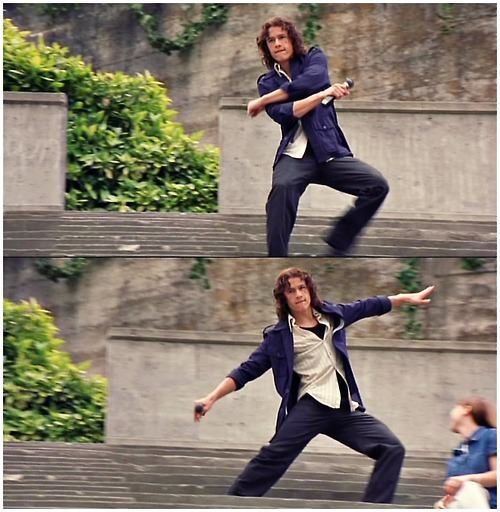

Trilha Sonora
A trilha sonora é um marco dos anos 90, incluindo:
- "I Want You to Want Me" - Letters to Cleo
- "Cruel to Be Kind" - Letters to Cleo
- "Your Winter" - Sister Hazel
- "Even Angels Fall" - Jessica Riddle
- "New World" - Leroy
Curiosidades
🎭 Adaptação Shakespeariana
O filme é uma adaptação moderna de "A Megera Domada" de William Shakespeare. O nome "Stratford" é uma homenagem à cidade natal do dramaturgo.

🎸 Cena Musical Espontânea
A icônica cena onde Patrick canta "Can't Take My Eyes Off You" no estádio foi improvisada por Heath Ledger, que convenceu o diretor a deixá-lo performar genuinamente.
📝 Poema Autêntico
O poema "10 Coisas que Eu Odeio em Você" foi escrito pela própria atriz Julia Stiles, que contribuiu com suas próprias experiências emocionais.
🎬 Estreias Importantes
Este foi um dos primeiros filmes principais de Heath Ledger e Joseph Gordon-Levitt, lançando suas carreiras internacionais.
Prêmios e Indicações
- MTV Movie Awards 2000: Melhor Performance Feminina (Julia Stiles) - Indicada
- Teen Choice Awards 1999: Filme do Verão - Vencedor
- YoungStar Awards 1999: Melhor Atriz Jovem (Julia Stiles) - Indicada